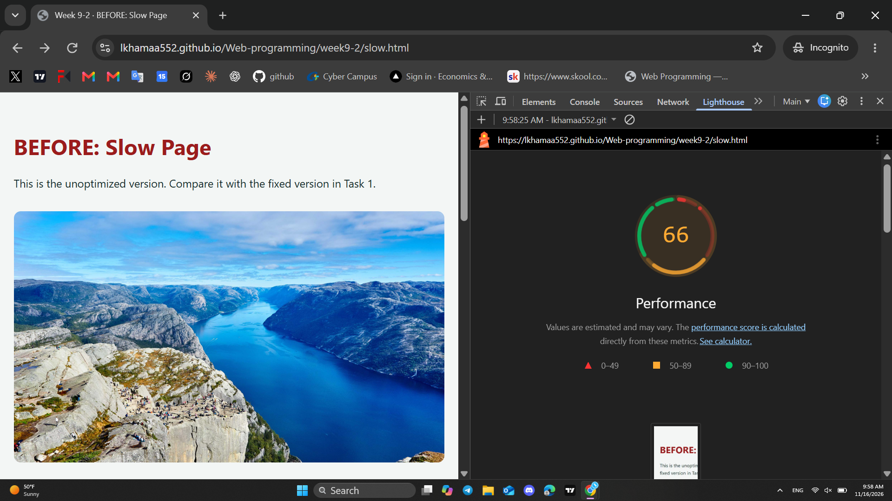
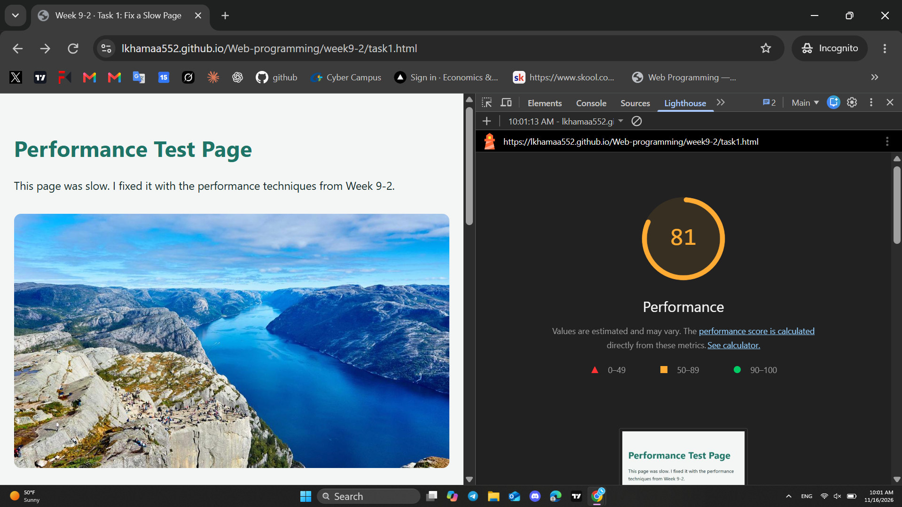
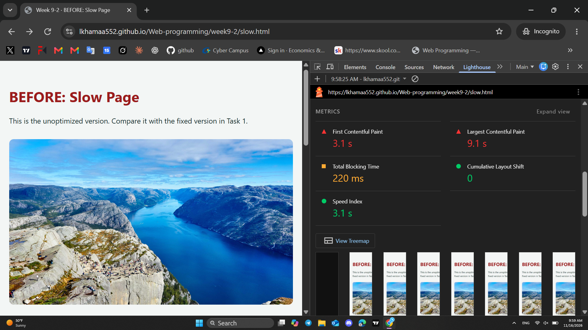
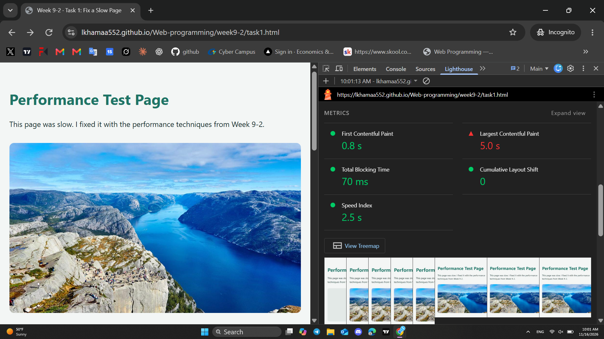

Week 9-2 · Performance Report
Aranjmaa Lkhamaa · 202637428 · Lighthouse Performance, Mobile, Incognito window · 16 Nov 2026
1. What I tested
I made two versions of the same page and measured both with Lighthouse (Performance only, Mobile). I used an Incognito window, because my first run showed a warning that Chrome extensions were slowing the page down.
- Before: slow.html: three big libraries in the <head> without
defer, 2400px images, nowidth/height, no lazy loading. - After: task1.html: the same content with my fixes.
2. Results
| Metric | Before | After |
|---|---|---|
| Performance score | 66 | 81 |
| First Contentful Paint (FCP) | 3.1 s | 0.8 s |
| Largest Contentful Paint (LCP) | 9.1 s | 5.0 s |
| Total Blocking Time (TBT) | 220 ms | 70 ms |
| Cumulative Layout Shift (CLS) | 0 | 0 |
| Speed Index | 3.1 s | 2.5 s |
3. What I changed and what happened
- Removed the blocking scripts / added
defer. In the slow page the browser had to download three libraries before it could show any text. After the fix, the first text appeared in 0.8 s instead of 3.1 s (FCP), and Total Blocking Time went down from 220 ms to 70 ms. - Smaller images (1200px instead of 2400px),
fetchpriority="high"on the first image andpreconnectto the image server. The main image (LCP) now appears in 5.0 s instead of 9.1 s. loading="lazy"on the lower images. The two photos below the screen no longer compete with the main image at the start.widthandheighton images. CLS was already 0 in both tests, so in this test I could not see a difference. I still keep them, because they reserve space for the image on slower connections.
4. What is still not good enough
LCP is still red (5.0 s, the goal is under 2.5 s). The main photo is still 1200px wide, which is too big for a phone screen. My next step would be the technique from Task 2: a <picture> element with a small WebP version and srcset/sizes, so phones download a smaller file.
5. Screenshots



